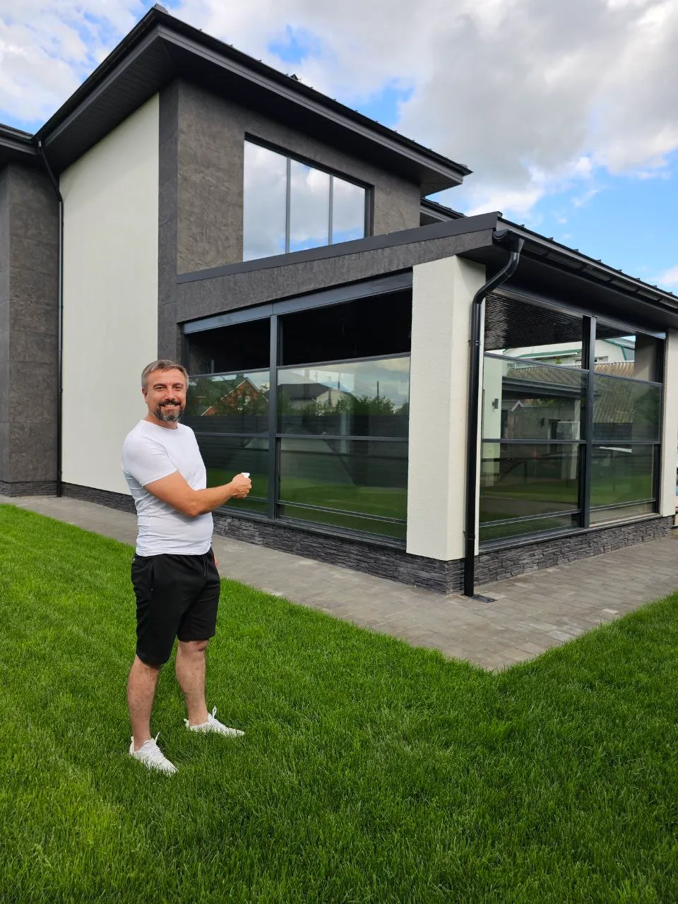
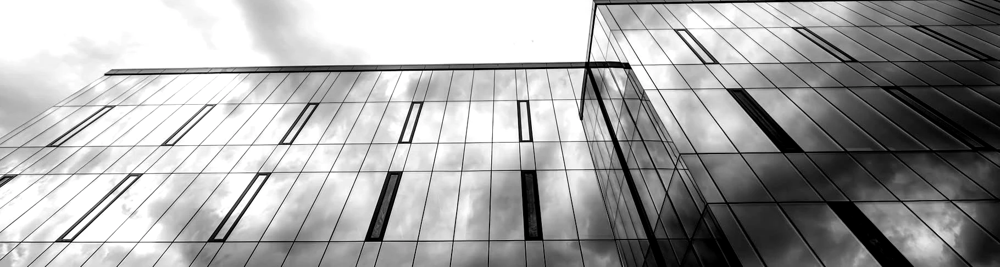

04 / CUSTOM-FORMS
Нестандартні форми
Арки, трикутники, кола та скошені кути — скління, що точно повторює архітектуру, якою б нетиповою вона не була.
01 — Про систему
Якщо отвір нестандартний — конструкція теж.
Нестандартні форми — це скління отворів, що виходять за межі прямокутника: арки фронтонів, трикутники мансард, круглі та сегментні вікна. Профіль гнеться під заданий радіус, а скло ріжеться за шаблоном — кожна деталь виготовляється індивідуально.
Геометрію, вузли примикань і вибір профілю розраховуємо під конкретний отвір — без типових рішень і компромісів із архітектурою.
Гнуття профілю
Будь-яка геометрія
Точний розрахунок
02 — Анатомія форми
Бібліотека форм
Шість базових геометрій, з яких збираємо будь-який нетиповий отвір — окремо або в комбінації під конкретну архітектуру.
03 — Характеристики
Дата-шит системи
Значення орієнтовні — мінімальний радіус та геометрію підтверджує замір і інженерний розрахунок під конкретний отвір.
04 — Варіанти
Три родини форм
Будь-який нетиповий отвір зводиться до однієї з трьох родин геометрії — або їх поєднання. З цього починаємо розрахунок.

Арки та сегменти
Напівкруглі та сегментні арки на гнутому профілі — дуга без зламів і видимих стиків. Для фронтонів, порталів і сходових вітражів.
Трикутники й трапеції
Скоси під кут даху для мансард і фронтонів. Прямі секції можуть бути глухими або з поворотно-відкидними стулками.
Кола та овали
Круглі та овальні конструкції — від невеликого ілюмінатора до великого вітража; скло ріжемо за лекалом і вставляємо в гнуту раму.
05 — Реалізовано
Проєкти в цій категорії
06 — Питання
Про нестандартні форми
07 — Заявка